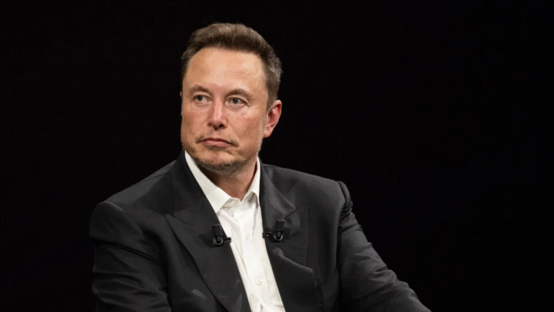

El Faro
Tu noticia veraz cada día
Tu noticia veraz cada día
Una megaderrota para las megatecnológicasEconomía Empresarial
El año pasado, el Gobierno del presidente de EE UU Joe Biden enfureció a los lobistas de las megatecnológicas y otras empresas que se lucran con nuestros datos personales... |
Europa y una inteligencia artificial responsableEuropa
La inteligencia artificial (IA) ha experimentado un crecimiento exponencial en los últimos años, transformando la economía global... |
Desestiman caso de Musk contra grupo de vigilancia del discursoLegalUn juez federal desestimó este lunes una demanda que interpuso X, empresa de Elon Musk, contra un grupo de vigilancia por sus reportes de discursos de odio en la red social... |